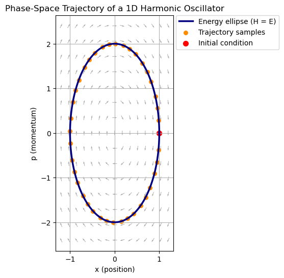
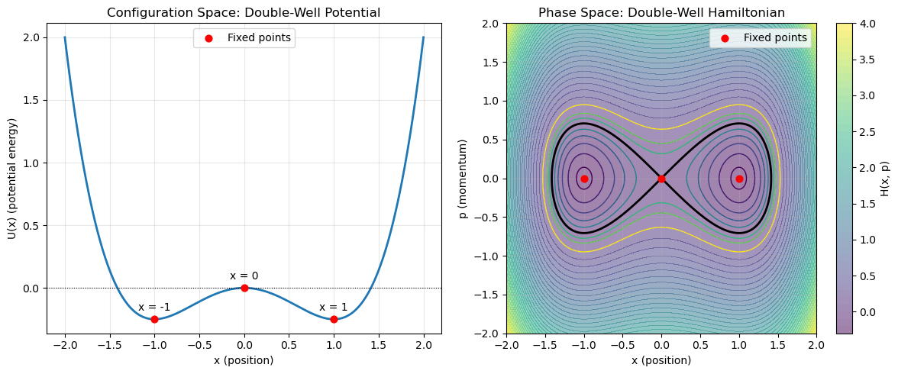

A1.4 Phase Space and Hamiltonian Flow#
A1.4.1 Motivation: Why Phase Space?#
In the Lagrangian picture, the state of a system is described by its positions alone; the velocities are implicitly determined by motion. But in Hamiltonian mechanics, the natural object is phase space — a space constructed from both positions and momenta.
Phase space is powerful because:
It captures all possible states of a system in a single geometric picture.
It turns motion into curves traced out by a point moving through this space.
It reveals structures like fixed points, separatrices, stability, and closed orbits.
It allows us to understand phenomena such as resonance, nonlinear oscillations, and eventually chaos.
It gives us tools to think about probability distributions, density evolution, and Liouville’s theorem.
Most importantly:
Phase space turns classical mechanics into geometry.
You are no longer pushing symbols — you are watching trajectories evolve in a multi-dimensional space of states.
The shift from configuration space to phase space is one of the biggest conceptual upgrades in classical mechanics.
A1.4.2 Configuration Space vs. Phase Space#
Configuration Space#
This is the space of all possible positions:
A particle in 1D → \(Q = \mathbb{R}\)
A particle in 3D → \(Q = \mathbb{R}^3\)
A double pendulum → \(Q = S^1 \times S^1\)
A rigid body → \(Q =\) the rotation group \(\mathrm{SO}(3)\)
A point in \(Q\) tells you where the system is, but not where it is going.
Phase Space#
Phase space is:
Dimension: \(2n\), one position and one momentum for each coordinate.
A point in \(\Gamma\) contains full dynamical information: positions and momenta → state = initial condition.
A1.4.3 Hamiltonian Flow: Trajectories in Phase Space#
Hamilton’s equations:
describe a velocity field in phase space:
The solution curves of this vector field are the trajectories or orbits in phase space. A single point moving through phase space is the evolution of the system.
This geometric interpretation is the key to understanding stability, periodic motion, and ultimately Liouville’s theorem and chaos.
Concept Highlight: Hamilton’s Equations Define a Vector Field
Every point in phase space has a little arrow attached to it showing the system’s instantaneous direction of motion.
Trajectories are then integral curves of this vector field, forming the geometric picture at the heart of Hamiltonian mechanics.
Example: Phase Space of a Harmonic Oscillator
For the harmonic oscillator,
Hamilton’s equations give
Energy Curve (Ellipse)
Eliminating \(t\),
which integrates to the energy condition
This is the equation of an ellipse in the \((x,p)\)-plane.
Every initial condition with energy \(E\) lies on this ellipse.
Where the Phase-Space Trajectory Comes From
A single point in phase space, such as \((x_0, p_0)\), represents the complete state of the oscillator. Hamilton’s equations tell us how that state evolves in time:
at \((x_0, p_0)\) the system has a definite velocity
\[ \mathbf{v}(x_0,p_0) = \left(\frac{p_0}{m},\, -k x_0\right), \]which determines the next point in phase space,
which determines the next, and so on.
Thus the trajectory in phase space is the curve traced out by the evolving state
Because the energy \(E\) is constant for all time,
the entire trajectory must lie exactly on the energy ellipse.
So in this example:
The energy ellipse shows all allowed states of energy \(E\).
The trajectory curve shows how the system moves along that ellipse as time progresses.
Both consist of the same set of points, but the trajectory carries direction, orientation, and speed information that the ellipse alone does not.

A1.4.4 Fixed Points and Stability in Phase Space#
Phase space is more than a place to draw curves — it is a geometric laboratory for understanding qualitative behavior of dynamical systems. One of its most powerful tools is the study of fixed points and their stability.
What is a Fixed Point?#
A fixed point (also called an equilibrium point) is a state where the system does not move:
In phase space, this corresponds to a single point where the vector field
is exactly zero — no arrow, no motion.
Examples:
A mass at the bottom of a bowl (stable).
A mass balanced at the top of a hill (unstable).
A double-well potential has two stable points and one unstable one.
Why Fixed Points Matter#
Fixed points are the “anchors” of phase space.
They determine the local geometry and organize the global structure of trajectories.
Near a fixed point:
trajectories may circulate (stable center)
trajectories may diverge (unstable saddle)
separatrices may emerge (boundaries between qualitatively different motions)
even chaotic behavior can occur in nonlinear systems
Understanding fixed points is the first step toward understanding stability, oscillations, bifurcations, and eventually chaos.
Linearization Near a Fixed Point#
To study stability, we linearize the equations of motion near a fixed point:
Let \((q^*, p^*)\) be a fixed point.
Expand the Hamiltonian to quadratic order:
where \(A\) is the matrix of second derivatives (the Hessian of \(H\)).
Linearizing Hamilton’s equations gives:
where
is the symplectic matrix, and the eigenvalues of the matrix \(JA\) determine stability.
What “Symplectic” Means
A matrix is called symplectic when it preserves the fundamental pairing between coordinates and their conjugate momenta, ensuring that the geometric structure of phase space—and in particular its area—is left unchanged.
Concept Highlight: Why Eigenvalues Determine Stability
For a linearized system
the solution has the general form
where \(\lambda_1\) and \(\lambda_2\) are the eigenvalues of \(M\).
Thus the sign and type of the eigenvalues govern how nearby trajectories behave.
Imaginary Eigenvalues → Stable Center
If
then
This means:
no exponential growth or decay
solutions are pure oscillations
trajectories trace closed loops in phase space
nearby trajectories stay near the equilibrium forever
This is the mathematical reason a potential minimum gives a stable oscillation.
Real Eigenvalues with Opposite Signs → Saddle Point
If
then
So:
one direction expands exponentially
the other direction contracts exponentially
trajectories are repelled along one axis and attracted along the other
the equilibrium is unstable
the special trajectories that follow the stable/unstable directions form the separatrices
This behavior creates the characteristic saddle structure in phase space — the hallmark of an unstable equilibrium (e.g., a ball balanced atop a hill).
Why Hamiltonian Systems Have Only These Two Cases
For any Hamiltonian system:
the stability matrix is \(M = JA\)
\(J\) is traceless
\(A\) is symmetric
therefore the trace of \(M\) is zero
This forces the eigenvalues to come in pairs that sum to zero, meaning:
they cannot both be negative → no stable attractors
they cannot both be positive → no repellers
no spirals → Hamiltonian systems do not have damping
Thus the only possibilities are:
pure imaginary pair → stable center
real opposite-sign pair → saddle
This is a direct consequence of Liouville’s theorem (volume-preserving flow) and the symplectic structure of Hamiltonian mechanics.
Box Activity 1: Expand the Hamiltonian Near a Fixed Point and Identify the Hessian Matrix
Let \((q^*, p^*)\) be a fixed point of a 1D Hamiltonian system, so that
We now expand the Hamiltonian to second order in small deviations
\(\delta q = q - q^*\) and \(\delta p = p - p^*\).
Your task: Show that the Taylor expansion of \(H(q,p)\) around the fixed point can be written in compact matrix form involving the Hessian matrix.
Steps
(a) Write the second-order Taylor expansion of \(H(q,p)\) around \((q^*,p^*)\).
(Remember: all first-order terms vanish because this is a fixed point.)
(b) Identify the second derivatives:
\(a = \left.\frac{\partial^2 H}{\partial q^2}\right|_*\)
\(b = \left.\frac{\partial^2 H}{\partial q \partial p}\right|_*\)
\(c = \left.\frac{\partial^2 H}{\partial p^2}\right|_*\)
(c) Assemble these into the Hessian matrix:
(d) Show that the quadratic expansion can be written in matrix form as
This compact expression is the starting point for linearizing Hamilton’s equations.
Detailed Solution
(a) Taylor expansion
Because \((q^*,p^*)\) is a fixed point, all first derivatives vanish:
Thus the Taylor expansion to second order is
(b) Second derivatives
Identify:
(c) Form the Hessian
Note: \(A\) is symmetric because mixed partials commute
\(\displaystyle \frac{\partial^2 H}{\partial q\,\partial p}
= \frac{\partial^2 H}{\partial p\,\partial q}\).
(d) Matrix form of the expansion
Write the quadratic form compactly, and write it out to show it is identical to your expansion terms in part (a):
Thus:
which is the quadratic Hamiltonian used for linear stability analysis.
Box Activity 2: Linearizing Hamilton’s Equations Near a Fixed Point
Consider a 1D Hamiltonian expanded to quadratic order around a fixed point \((q^*, p^*)\):
where
\(\delta q = q - q^*\)
\(\delta p = p - p^*\)
\(a = \left.\frac{\partial^2 H}{\partial q^2}\right|_*\)
\(b = \left.\frac{\partial^2 H}{\partial q\,\partial p}\right|_*\)
\(c = \left.\frac{\partial^2 H}{\partial p^2}\right|_*\)
Hamilton’s equations are:
Your task: derive the linearized evolution equations
where
Steps
(a) Compute
\(\displaystyle \frac{\partial H}{\partial q}, \quad \frac{\partial H}{\partial p}\)
from the quadratic Hamiltonian.
(b) Write the linearized Hamilton’s equations:
\(\dot{\delta q} = \frac{\partial H}{\partial p}\),
\(\dot{\delta p} = -\frac{\partial H}{\partial q}\).
(c) Express these as a matrix equation
(d) Show that \(M = JA\), proving that the stability is determined by the eigenvalues of \(JA\).
Detailed Solution
(a) Compute partial derivatives
From
we get:
(b) Linearized Hamilton’s equations
(c) Matrix form
Thus
(d) Show that \(M = JA\)
Thus:
and the eigenvalues of \(JA\) determine the stability:
imaginary → stable center
real, opposite signs → saddle point
Stability Types in 1 Degree of Freedom#
For 1D Hamiltonian systems, fixed points fall into two universal categories:
Stable Center#
Occurs when the potential has a local minimum:
Eigenvalues are purely imaginary.
Phase space view:
Trajectories are closed loops around the fixed point
Energy contours are nested ellipses
The oscillator (harmonic or not) repeatedly returns near the equilibrium
Physical picture:
A mass at the bottom of a bowl.
Unstable Saddle#
Occurs when the potential has a local maximum:
Eigenvalues are real and opposite in sign.
Phase space view:
Trajectories diverge exponentially from the fixed point
Two special trajectories pass through the fixed point: the separatrices
They divide phase space into regions with qualitatively different behavior
Physical picture:
A mass balanced at the top of a hill.
Why Hamiltonian Systems Never Have Attractors#
A crucial fact:
Hamiltonian flow preserves phase-space volume (Liouville’s theorem).
This means:
trajectories cannot converge to a point or orbit
no spirals inward or outward
no sinks or sources
no damping
no attractors or repellers
Thus the only possible fixed points are:
centers (neutrally stable)
saddles (unstable)
This is a major difference between Hamiltonian systems and dissipative systems (like damped oscillators).
Separatrices: The Boundaries of Motion#
Unstable saddles generate separatrices — special trajectories that pass through the saddle and divide phase space into distinct regions:
bounded oscillations
unbounded motion
trapped vs escaping trajectories
Separatrices often create dramatic, easily visible structures (e.g., the classic pendulum phase portrait) and are foundational for understanding the onset of chaos.
Geometric Summary#
A fixed point is where the motion freezes.
Linearization reveals whether nearby motion is oscillatory or divergent.
Stable centers give closed orbits.
Saddles give separatrices.
No attractors exist because phase space volume is preserved.
Phase space reveals the hidden architecture of dynamics — long before one solves the equations explicitly.
Box Activity 3: Stability Analysis of a Double-Well Hamiltonian
Consider the Hamiltonian
This is the double-well potential, often used in molecular physics, field theory, and nonlinear dynamics.
Your tasks:
(a) Identify all fixed points
Solve for \((x^*,p^*)\) such that
(b) Determine their stability
Using the formulas
form the Hessian
and classify each fixed point using the eigenvalues of \(M = JA\).
(c) Sketch or plot the phase portrait
On the \((x,p)\) plane:
show the fixed points
draw the closed orbits around stable centers
sketch the separatrix loops passing through the unstable saddle
clearly identify the “figure-eight” structure
If you prefer, generate the plot in Python using your own script.
Detailed Solution
(a) Fixed points
Hamilton’s equations:
Setting \(\dot{x}=0\) gives \(p^*=0\).
Compute
$\(
\frac{\partial H}{\partial x} = x^3 - x.
\)$
Setting \(\dot{p}=0\) gives:
Thus:
\((x^*,p^*) = (0,0)\)
\((x^*,p^*) = (+1,0)\)
\((x^*,p^*) = (-1,0)\)
(b) Stability
Second derivatives:
At \(x^*=0\)
Thus the Hessian is
Then
Eigenvalues satisfy:
Thus
→ real, opposite signs → saddle (unstable).
At \(x^* = \pm 1\)
Thus
Then
Eigenvalues satisfy:
Thus:
→ pure imaginary → stable centers.
(c) Phase portrait structure
Two stable centers at \((x,p) = (\pm 1, 0)\)
One unstable saddle at \((0,0)\)
A pair of separatrix curves form a “figure-eight” loop around the two wells
Small oscillations around each stable point occur on nested closed orbits
Large enough energies cross the separatrix and move between wells
This is one of the most important canonical examples of nonlinear dynamics.

A1.4.5 Why Phase Space Matters#
Phase space:
reveals stability without solving differential equations
exposes hidden structure (invariants, symmetries, conserved quantities)
leads naturally to Liouville’s theorem
makes canonical transformations geometrically meaningful
provides the bridge to chaos theory, where trajectories stretch and fold in intricate patterns
Hamiltonian mechanics is most powerful when students see motion geometrically, not just algebraically.
Next Section → Liouville’s Theorem#
Here we show that Hamiltonian flow preserves phase-space volume — a key feature distinguishing Hamiltonian systems from dissipative ones, and an essential foundation for understanding chaos and statistical mechanics.